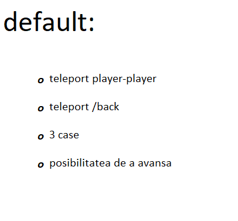
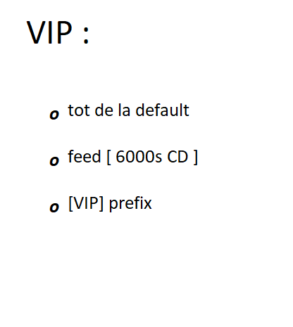

ACASA
Informatii generale:
Modificari Survival:
Survival Aparte:
Nu exista plugin pentru protectia teritoriului, astfel majoritatea blocurilor pot fi sparte (sunt griefable)!
Data fiind absenta intentionata a unui astfel de plugin am hotarat sa modificam 2 iteme care alaturi de pluginul StickyLocks, mentionat mai jos, vor oferii protectie itemelor voastre. Cele 2 iteme sunt: CHEST si OAK_DOOR (Usa cu skin default. Orice alt tip de usa este exclus).
Aceste 2 iteme pot fi sparte NUMAI cu TNT-uri. Astfel StickyLocks devine utilizabil si poate proteja intradevar itemele jucatorilor.
Informatii Plugins:
BackPacks+:
Ofera posibilitatea maririi inventarului cu pana la 44 de sloturi (Mega Backpack).
Sunt 100% craftabile, totodata disponibile in SHOP la un pret rezonabil.
Pentru mai multe detali vizitati site-ul dezvoltatorului!
LINK PluginStickyLocks:
Ofera posibilitatea blocarii de: cufere, usi, furnale, trapdoors, etc.
Mod de utilizare: Se ia un Stick si se utilizeaza impreuna cu Click Dreapta cu privirea indreptata spre cufar.
Pentru mai multe detali vizitati site-ul dezvoltatorului!
LINK PluginGrade pe server
default
Gradul default are acces la comenzile de baza ale oricarui server de minecraft care foloseste EssentialsX , precum: tpa, tpr, rtp, back, home, etc;
Cei care apartin grupului au:
VIP
Gradul VIP nu este cu mult mai special fata de cel default. Doua exceptii fac special acest rol , acelea fiind: posibilitatea de /feed o data 10 minute (6000 de secunde), respectiv prefixul [VIP] langa numele jucatorului.
Pe scurt, VIP arata astfel:
